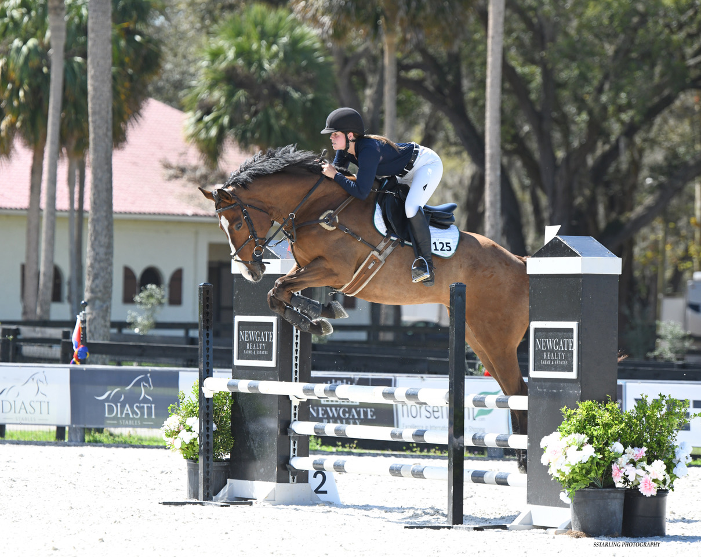

I'm engineering-educated, currently splitting my time between scaling existing systems and building new ones from the ground up.
My focus is on the work that compounds: clean systems, useful infrastructure, and the details that let teams focus on creating the best quality.

I grew up in the Midwest, around horses, in the barn. There, I learned how to work long days at the early age of thirteen. Horses are twenty-four seven, nonstop. They never take vacations or days off.
That work ethic shaped my future. The barn taught me how to be incredibly efficient and maximize every minute of every day.
I love engineering, and I love people. Operations is where those two things meet for me. I can't wait to keep optimizing the future, helping enterprises run better, and using good systems to better humanity in the process.
Outside of work, I'm still a horse person and a book person. Mostly nonfiction. Technology, philosophy, history, and politics.
I'm deeply passionate about innovation and technology. I also believe in preserving what's good, beautiful, lovely, and true. Everything that keeps us human. The best technology, to me, holds both at once.
The future is already here. We are curing cancer, healing disease, building flying cars and rocket ships. Humanity isn't perfect, but humanity is getting so much better. I am excited to see how far we can flourish.
With new technology like blockchain, everyone has access to real freedom and real ownership. Money you actually own. Networks that don't need permission. A new kind of trust that doesn't depend on any institution. That's a huge development for humanity.
A breakthrough only matters when people actually use it. The bridge from invention to adoption is what turns an idea into something the world can lean on. I've always been drawn to the early end of that curve. I bought my first Bitcoin in 2018, and I've been paying close attention to what gets built next ever since.
I want to spend my career making powerful tools accessible to the people who need them. The infrastructure layer matters, but so does the delivery, the onboarding, the experience of actually getting your hands on the thing. That's where I want to work.
I write a Substack at the intersection of technology, philosophy, and the human side of building. New posts whenever something feels worth saying.
Scaled the summer program from $180k to $850k over three seasons, onboarding around 60 new clients a year, managing 200+ active service contracts, and hiring and training a 50+ person seasonal team. Built a referral pipeline that eventually drove 30%+ of new acquisition. Salesforce for the CRM side, plenty of AR/AP and contract billing underneath. Averaging workweeks of 60+ hours, with plenty of long days.
A 45-day Lean Six Sigma engagement across the pond. Focused on improving efficiency in the day-to-day workflow and delivering a better experience for Kingsclere's clients. Auditing existing processes, writing SOPs, and smoothing out the small inefficiencies that compound over time. Delivered a 14% reduction in daily wasted time and 11% in cost savings.
My first post-graduate role. Translated messy technical workflows into compliance and governance documentation that Legal, Finance, and Operations all relied on. Improved system uptime by 21%. Learned how to write the kind of documentation that auditors actually read.
Ran daily operations for a 200-horse string at a barn valued at over $10M. Coordinated international shipping, customs, and welfare compliance across multiple jurisdictions. Led a 22-person team of grooms, riders, and vets. If you can keep a barn that big on schedule and on welfare standard, most logistics afterward feel manageable.
A short list of books I keep returning to. Mostly nonfiction. Roughly in the order they come to mind.